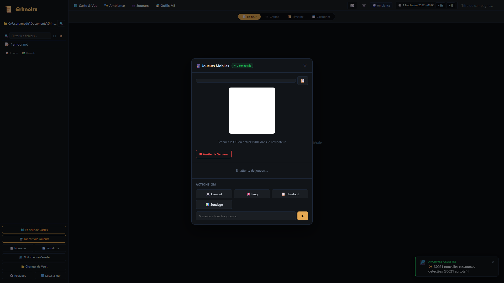

Le Hub Joueurs & Compagnon Mobile PWA
Transformez le smartphone de vos joueurs en véritable feuille de personnage interactive. Grâce au serveur local ultra-léger propulsé par Axum (Rust), vos joueurs scannent un simple QR code pour lancer des dés en direct, consulter leur inventaire et voter aux sondages sans créer de compte ni installer d'application sur les stores.
📱 Visite du Hub & Compagnon Mobile
Survolez ou cliquez sur les pastilles dorées pour découvrir les 5 piliers du Hub Joueurs.

Flash QR Code & Zéro Configuration
Le QR code génère automatiquement l'URL locale sécurisée du PC du MJ. Vos joueurs scannent avec l'appareil photo de leur téléphone pour accéder instantanément à la PWA compagnon sans compte ni cloud.
Serveur Web Ultra-Rapide (Axum Rust)
Le serveur intégré en Rust tourne sur votre machine avec une latence inférieure à 2ms. Le bouton d'état permet d'arrêter ou relancer le serveur instantanément d'un simple clic.
Actions Rapides MJ
Quatre boutons d'action rapide : ⚔️ Mode Combat (synchronise le tour), 📍 Ping Carte (attire l'attention), 📜 Envoyer Handout (distribue un indice secret), et 🗳️ Lancer Sondage (vote en direct).
Suivi des Joueurs Connectés
Surveillez en direct les joueurs présents à la table, l'état de leur connexion WebSocket, leur personnage associé et leurs jets de dés récents transmis en temps réel.
Fonctionnement Transparent en Arrière-Plan
Fermez la fenêtre à tout moment : le serveur mobile continue de tourner silencieusement en tâche de fond. Vous pouvez continuer d'utiliser l'éditeur de notes ou la Table Virtuelle sans interrompre les téléphones de vos joueurs.